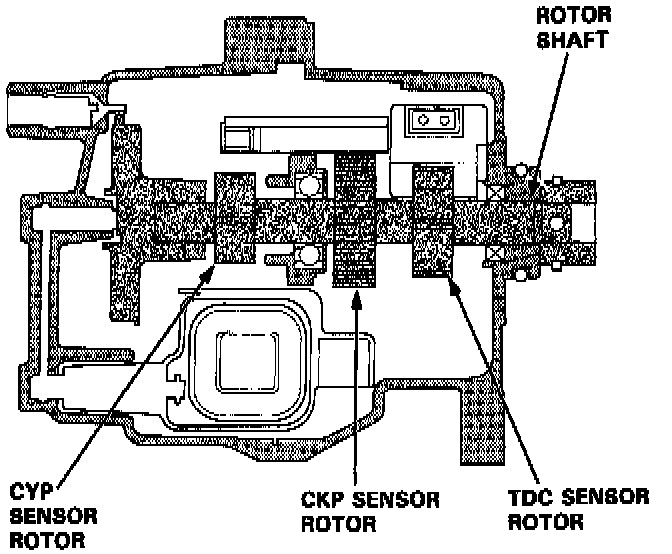

Camshaft Position Sensor: Description and Operation
TDC/CKP/CYP Sensor Sectional View:

PURPOSE
To determine ignition timing at start-up, position of #1 cylinder for sequential fuel injection, and normal timing for fuel injection and ignition of each cylinder and also detects engine RPM.
OPERATION
The Engine Control Module (ECM) uses these signals to determine fuel injector and ignition timing and to calculate engine RPM.
The Top Dead Center (TDC) sensor signal is used to determine ignition timing at engine start-up. This signal is also used as a backup signal in the event the Cylinder Position (CYP) sensor signal becomes abnormal.
The Crankshaft Position (CKP) sensor determines timing for fuel injection and ignition timing of each cylinder and detects engine speed.
The Cylinder Position (CYP) sensor generates a signal based on the position of the number #1 cylinder for proper timing of the sequential fuel injection system for all cylinders.
CONSTRUCTION
All three sensors are pickup coil and reluctor construction. The sensors cannot be serviced separately.